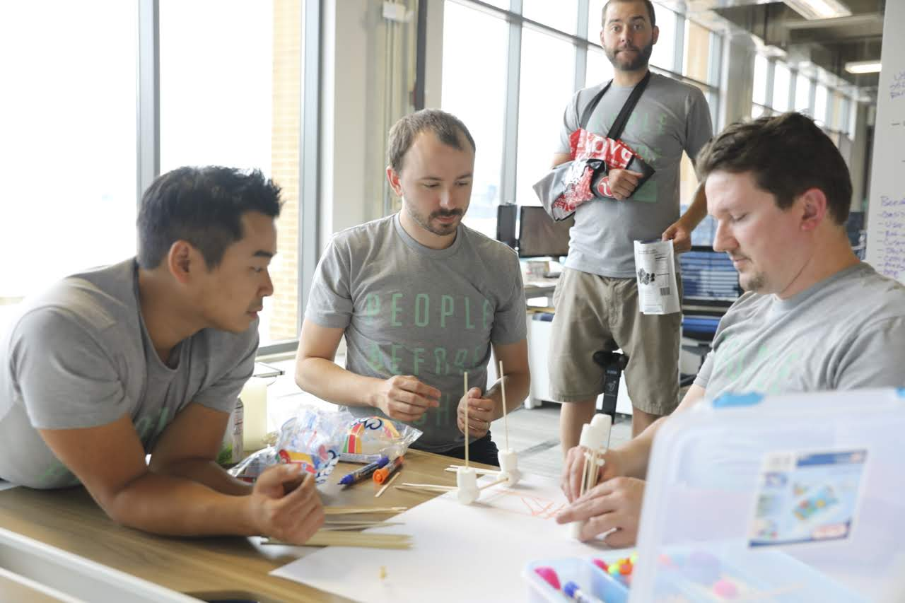
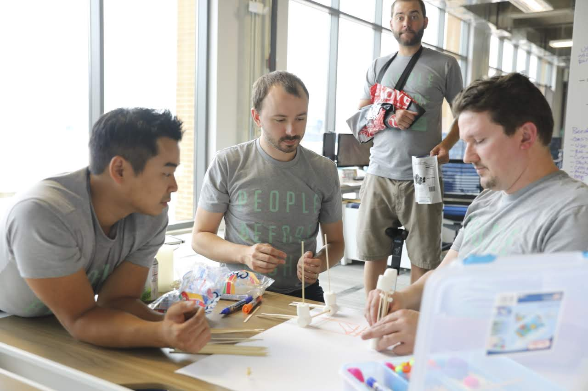
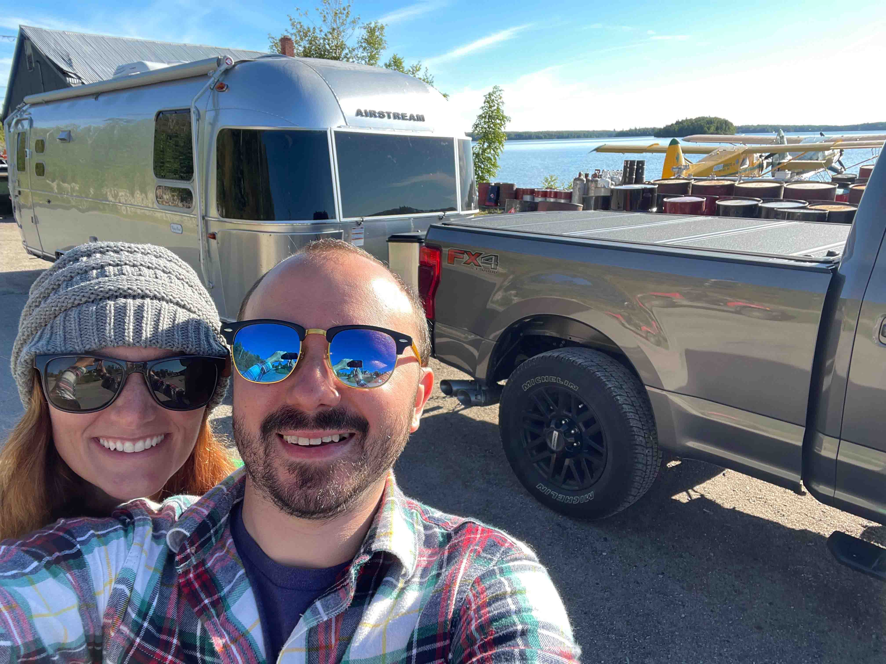
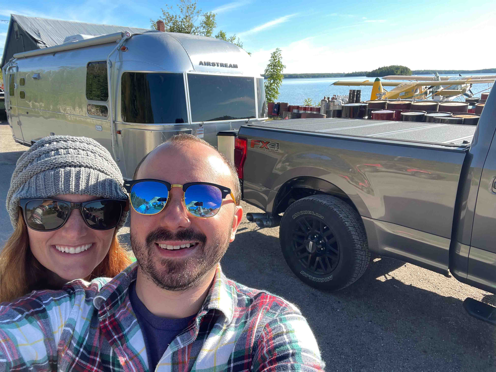

.About Me
My leadership style is that of a transformational leader. I have a unique perspective on the interplay of technology and business from both the breadth and depth of my body of work. That work spanned varying organization sizes and industry types. I began working with my previous two organizations while they were in the startup phase. Each company was a managed service provider or MSP. While there, I worked with established organizations ranging from 50+ employees to 6000+ employees. I've worked with enormous healthcare organizations, tiny financial institutions, technology firms, hospitality organizations, construction, and enormous financial institutions. This perspective has given me an understanding of the evolution an organization goes through in its lifetime. This experience has helped me to hone in and focus on what matters most for each organization, in both the present and future, by leveraging design thinking principles.
Most recently, I have had the privilege of working with a fantastic leadership team at Think|Stack. A pivotal person on that team and in my career has been Chris Sachse, CEO at Think|Stack. Chris is a forward thinker when it comes to innovation in business, design thinking, and putting people first. I've learned a lot about how to be a better leader through Chris.
You'll find that I enjoy amping up my team both behind the scenes and publicly. Whether that be taking the time to explore the team's hobbies with them, hosting a session of D&D, an escape room happy hour, or making sure our customers know the impact each individual team member is having for them. I come from a history of playing team sports. Sports taught me the value in lifting up those around you. The power of confidence and positive thinking in any one member of a team can spread like wildfire and allow for impressive feats, previously thought impossible. In that same way, failure is something a team bears the burden of together. A single play may have been what sticks in one's memories, but it was the team that brought that play to be. Even in that case, failure is merely a learning opportunity put forth right in front of your eyes. A guidepost pointing you and the team towards continuous improvement.
Interestingly, I'm just as comfortable delivering a presentation to a board as I am rolling up my sleeves writing code behind the scenes. I never stray too far from my roots as a network engineer: doodling a topology diagram on whiteboard, organizing thoughts and ideas on my tablet, and unpacking the nitty gritty details of a technology. By putting a piece of technology within my hands I can turn it around and view it from all angles. Doing so helps me to understand how it can be placed within a larger system.
In many ways I'm like a star in the galaxy. I naturally pull a strong team together around me. To me, the best experience is working with a team who builds things together. Hands on, constantly improving everything we touch.

 



 
